Attendance Management System
A system to store information about the employee's work time and
office time activity. An attendance management system refers to an
organization's approach to tracking employee time and attendance
information. An accurate attendance and time tracking system helps
you save time and effort in calculating your employees' working
hours. This system is developed to store information about the
employee's work time and office time activity. So that, end of the
month, it could be calculated how much time an employee spends in
the office. The count for the cup of coffee is also included inside
it. The system is developed back in September 2021. Since then Wake
UP ICT is using the system to track their office employees' work
time.
- Created: 01/10/2021
- Latest Update: 15/09/2022
- Developed By: Wake Up ICT
The system could be used by the following users:
- Employee
- Admin
- Human Resource Manager
Employee: All Employees can Check-In(Enter),
Check-Out(leave), and manage their break status including the
submission for coffee using the system. To insert the status
employee will have to type their login username as contact and
password then select the desired status from the option and click
submit. Employees can change their password and manage their
office in and out time after logging in to the panel. In order to
log in, the employee has to use the same process as the managed
status just have to select the option login.
- Manage Status
- Manage Office Time
- Change Password
Admin: An admin is also an employee. So, he can
also do the same as an employee can do. Admin can see and manage
each employee's attendance report and coffee report for each
month. He/she can also inactive or delete an employee from the
employee list.
- Manage Status
- Manage Office Time
- Change Password
- Attendance Report
- Coffee Report
- Employee Manage
Human Resource Manager: A manager is also an
employee. So, he can also do the same as an employee can do & also
the same as an admin can. The plus is the HR manager can also mark
an employee using a foul status if an employee does something
against the rules.
- Manage Status
- Manage Office Time
- Change Password
- Attendance Report
- Coffee Report
- Employee Manage
- Employee Penalty
After coming to the panel(Application Address or URL) users will
select a status and submit that status as their current office
activity status from the index page. All users submitted statuses
will be shown on the same page.
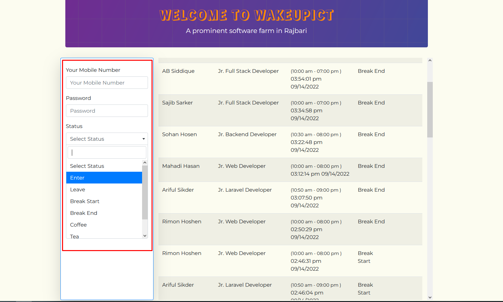
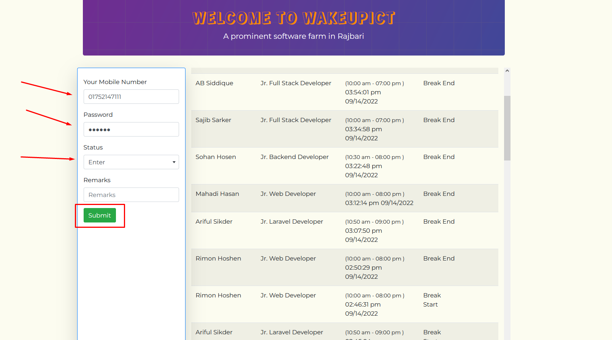
-
Enter: When an employee enter in the office. By
this status he/she will be counted as present in the office.
-
Break Start: After entering in the office if any
employee want to take a break then he/she will select this status
and will be counted as on break.
-
Break End: When the employee came back after
finishing his break he/she will submit this status. Means he now
in the house and will be counted.
-
Leave: After completing his/her work before going
to home the employee will submit this status and will be counted
as that employee has left the office.
-
Coffee: When an employee take a cup of coffee.
-
Login: When an employee want's To use other
features.
Every employee's office time will be counted within his/her
submitted status. The clock will start when he/she entered and will
stop when he/she leaves. If he stared his break then the clock will
stop counting time. It will be started again when submit Break end
status. In short the countable time is (Enter -
Leave) or (Enter - Break Start) &
(Break End - Leave). If an employee failed to
maintain this sequence his/her time will not be counted. The report
will say Break time low broken. And if managed properly then his
total work time will be shown on the report.
After login into the panel user will be able to access other
features. In this case, the employee has to select the login from
the option and submit the status.
Menu options will be different for different users. We already know
which user got which access. This image was taken while an admin
signed in.
Manage time to set your office start time and end time. Just
simplify inserting the start and leave office time and save will set
the office enter and leave time for you. If anyone Enter after
his/her provided Enter time he/she will marked red for the day and
if he/she Enter in time he/she will be marked green. The process of
changing office Enter and Leave is given below.
- Login in the user panel.
- Select Manage time from the menu.
- Set the start and end time.
- Submit.
In order to change password user require to give the old password
and then he/she can change the password. The process is given below.
- Login in the user panel.
- Select change password from the menu.
- Provide the old password in the first field.
- Provide your new password.
- Type the new password again to confirm.
- Submit.
If old password matches and the new password and confirm password
remains the same then users password will be changed.
With access of this panel the employees attendance report can be
seen. This report shows data by month. The process is given below.
From this list every employees legal daily work time could be seen.
- Login in the user panel.
- Select Attendance report from the menu.
- Select employee name & the time period(Month & year).
-
After submitting this form the selected employees selected year's
selected month's attendance report will be shown.
-
In the top-right corner his/her total work hour will be shown.
-
Work days are calculated by dividing the total time to 8 hours per
day.
-
In the bottom of the report there will be marked as foul section.
If that employee marked as foul then that will be shown there.
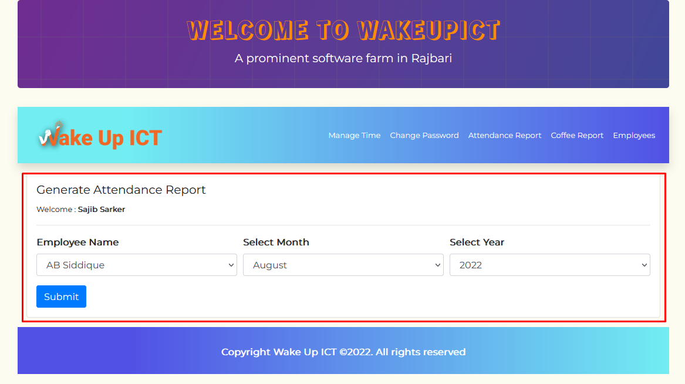
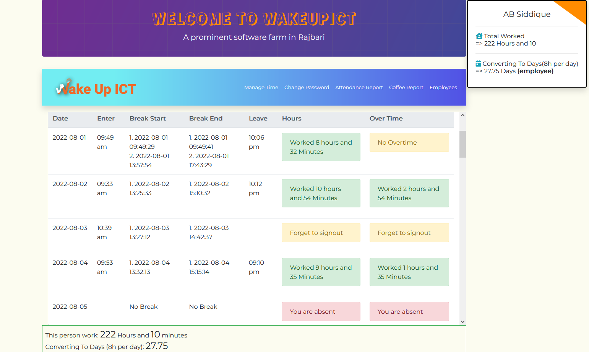
The list of monthly cup of coffees will be listed here. The process
is given bellow.
- Login in the user panel.
- Select Coffee report from the menu.
- Select the time period(Month & year).
-
After submitting this form the coffee report for this month will
be shown.
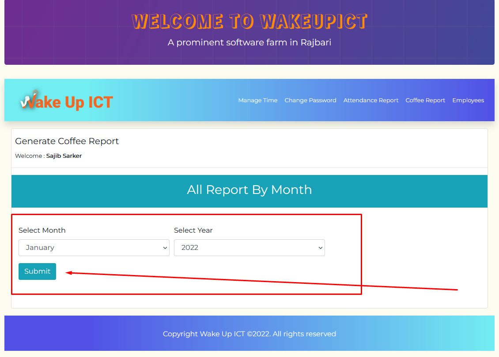
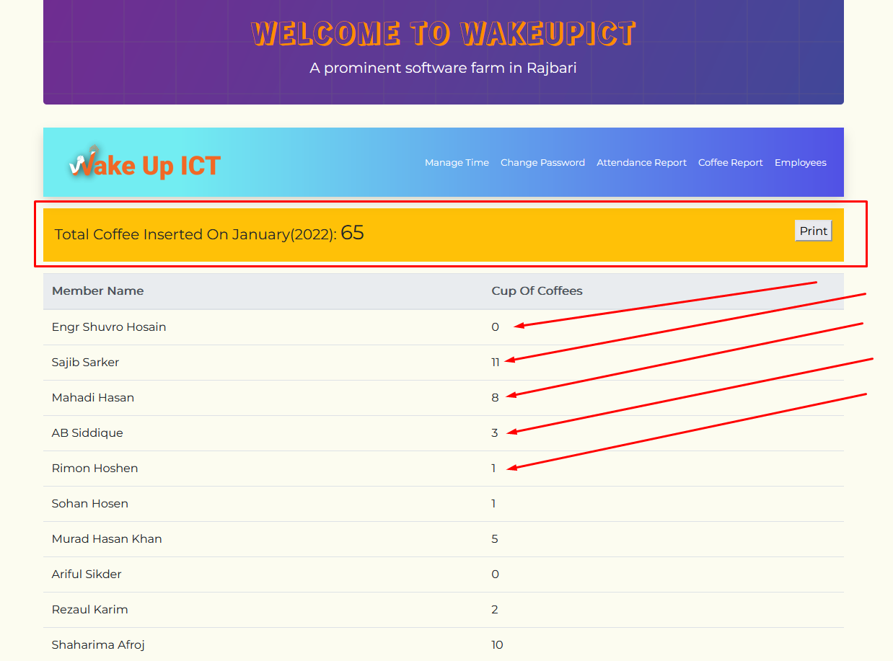
With access of this tab the employee can be managed from. Here
manage means the list of active and inactive employees. On this
panel active employees can be inactive and inactive employees can be
activated. Also employees can be deleted from this list. only active
employees are available to get any kind of report.
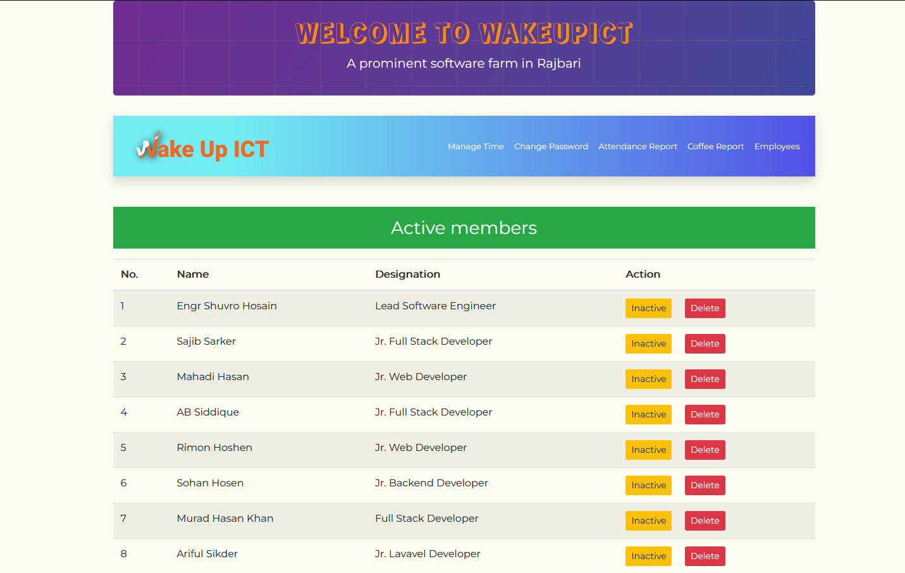
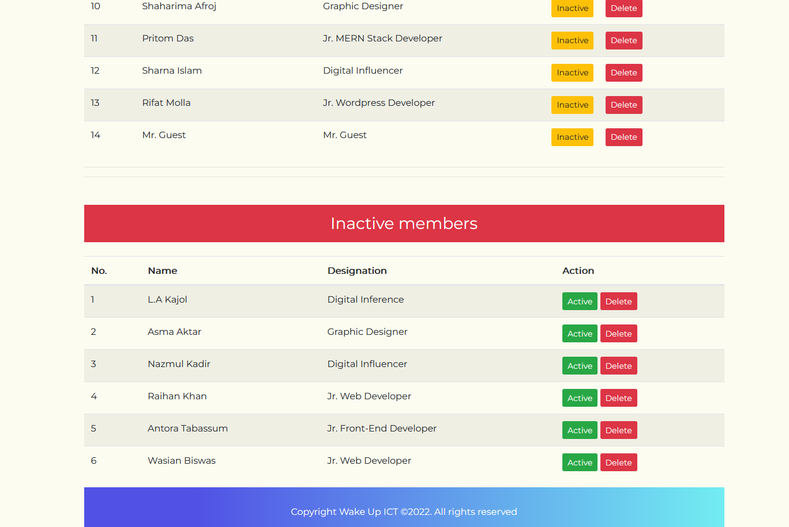
Both images are from the same page top part and bottom part. Users
could be inactivated and deleted from here. Dynamic Employee or user
can not be added and edited from this system.
If any employee break any rules then the HR manager will be able to
mark penalty to that employee. By selecting the employee a give a
reason why that employee is marked will do it. The marked
information will be seen on individual's attendance report.
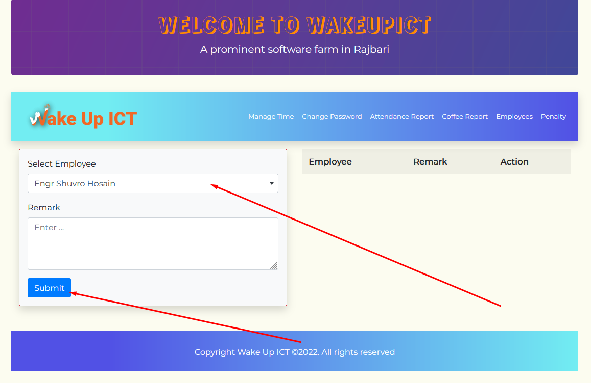
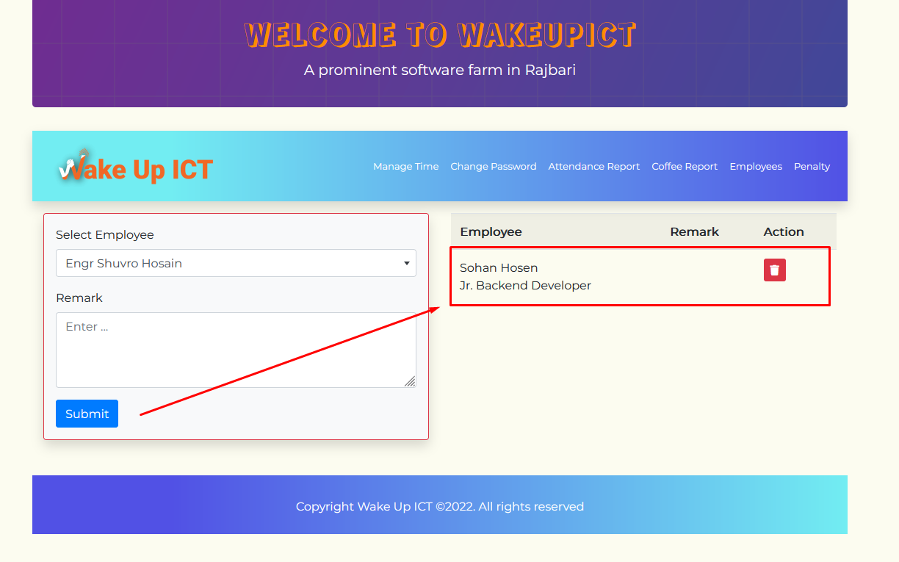
If any employee attend office in proper way and this work time is
below 8 hours(5 Hours if he/she is an intern) then he/she will be
warned by text SMS.
Some notes for the tester is given below.
- Use of developer tools is not allowed.
- Tea report not available.
-
Time format of Break start and end is not proper in the attendance
report.
- SMS alert system is not eligible for testing.
- Created: 01/10/2021
- Latest Update: 15/09/2022
- Developed By: Wake Up ICT
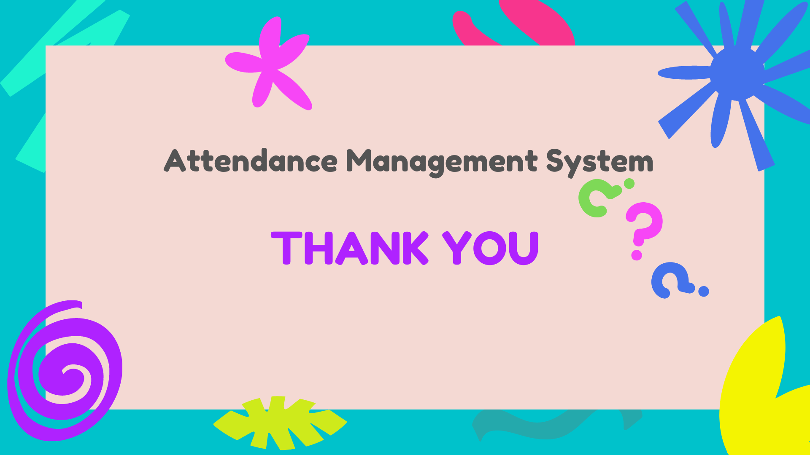
Copyright Wake Up ICT © 2022. All rights reserved.